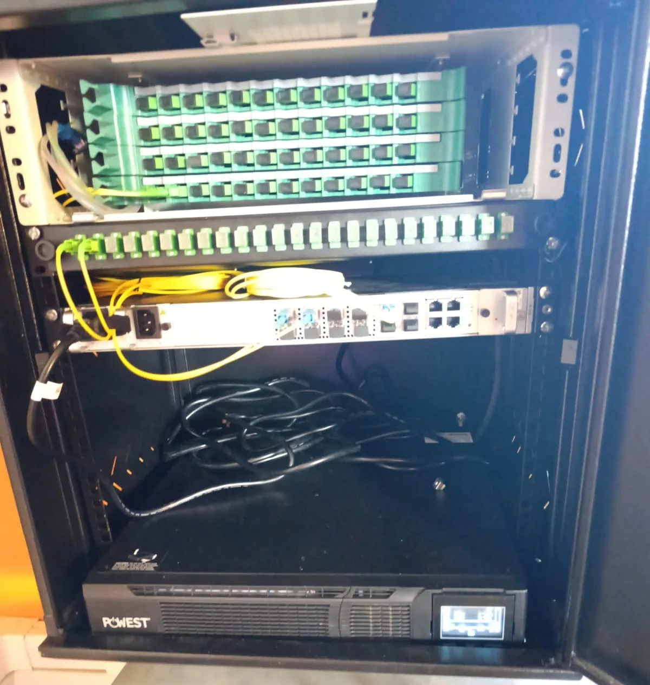

Putumayo · cinco municipios · agosto a octubre de 2026
Red de fibra óptica hasta el usuario en el Putumayo
Troncales y ramales en poste, nodos con racks y gabinetes, empalmes en cierres y en el ODF, cajas NAP y el servicio instalado en cada usuario.
- Redes troncales
- Tendido de ramales
- Instalación de rack
- Empalmes de fibra
- Cajas NAP
- Instalación de usuarios